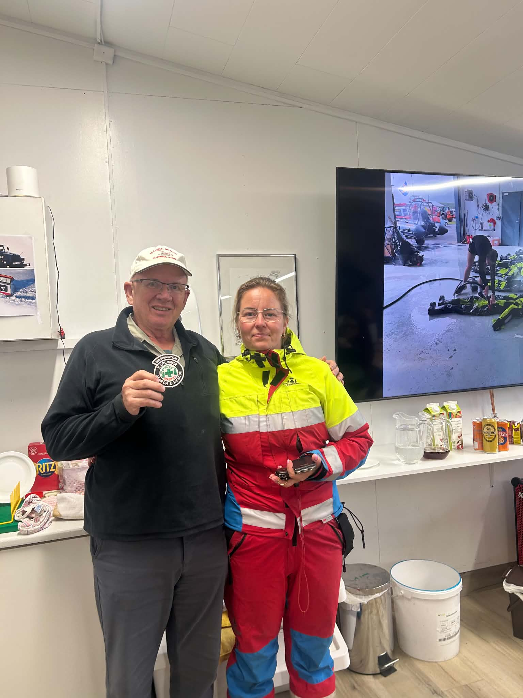

A Visit from Washington State
A recent visit reminded us how Search and Rescue work can connect people across countries, teams and generations.
We recently welcomed Glenn Yates from Olympia, Washington, USA, who visited Skagfirðingasveit and shared part of his family's long connection to Search and Rescue.
Glenn's father helped establish the Thurston County Explorer Search and Rescue (ESAR) unit in 1977 and later served in leadership roles at both local and state level. His mother was also involved as a registered leader for many years.
During the visit, Glenn brought several items connected to that work, including navigation compasses, waterproof field notebooks and Search and Rescue patches from Washington State.
Shared Experience
The items are a practical reminder that SAR teams in different countries often work with many of the same ideas: preparation, training, teamwork and service to the community.
Although the landscape and organisations may be different, the basic purpose is familiar: volunteers giving their time so they can be ready when people need help.
- Helping others.
- Working as a team.
- Training regularly.
- Sharing knowledge between generations.
- Serving the local community.
Glenn also told us about the Explorer Search and Rescue programme, which has introduced young people to Search and Rescue work and helped many continue as adult volunteers and leaders.
Thank You for the Visit
We are grateful to Glenn for visiting us, sharing this background and bringing these items to Skagafjörður.
They will be kept as part of our station's collection and can help us explain to future visitors how Search and Rescue work is organised in other places.
— Skagfirðingasveit Search and Rescue Team
Story Information
Location: Skagafjörður, Iceland
Visitor: Glenn Yates, Olympia, Washington, USA
Theme: A visit and a conversation
Status: Published story